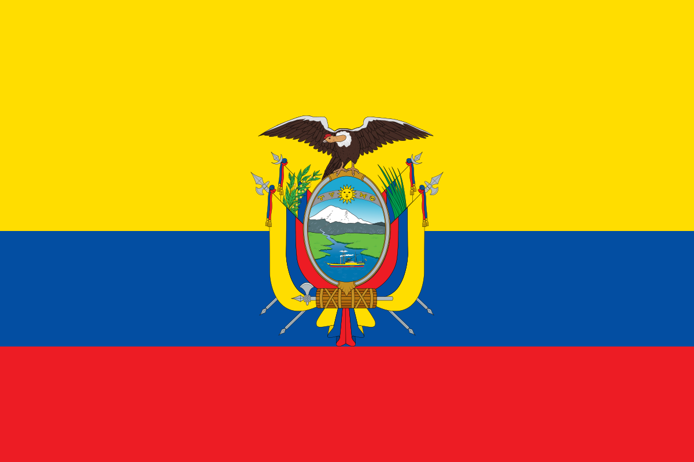

My name is Christoper and they call me Kyque. I was born in Ecuador and live with my family in Quito. I have been married for 4 years with my wife, my wife is from Guatemala. I am currently CEO of a software development services company called Glama. I have already 5 years of experience in software development, and these courses in BUY-I are helping me a lot to remember the basics that many times in the work is forgotten.
About Me
Quito, Ecuador

Quito, the capital of Ecuador, is a vibrant city full of history, located in the Andes Mountains at 2,850 meters above sea level. Known for its historic colonial center, which is a UNESCO World Heritage Site, Quito combines colonial architecture with modern urban life. From here, you can enjoy spectacular views of nearby mountains and volcanoes, explore museums, plazas, and sample the rich Ecuadorian cuisine.
Web Dev Resources